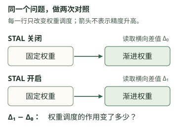

01 / 整体表现与单项作用，是不同问题
方案有效，
还要说明有效在哪里、因为什么。
一个新检测器可能同时改变网络、训练数据、优化器、训练时长和后处理。最终精度更高，说明完整配置取得了更好的测量结果；要进一步判断某个模块的作用，需要设计对应的受控比较。
整体比较
回答完整方案相对其他方案表现如何，需要同时交代精度、计算成本与评测条件。
单项归因
回答某项设计在特定背景配置中起了什么作用，通常通过只改变该因素的对照来检查。
实验名称服务于问题。消融、敏感性、泛化和效率实验分别提供不同证据，不能用一项结果代替其他问题的验证。
同一个实验可以承担多个分析目的。以下分类按主要问题组织，并非彼此排斥的固定目录。
02 / 通过受控的删、加或替换，定位设计作用
消融的核心是形成对照，
并保留可解释的差异。
消融实验通过受控地删除、添加或替换某项设计，检查结果如何变化，从而判断它在所测条件下的贡献与代价。
被改变的因素可以是网络模块、输入信息、损失函数、分配规则、数据增强或权重调度。以渐进损失为例，需要比较的是同一双分支框架下的固定权重与渐进权重。
- 把判断写成可以检验的问题。
例如：在同一双分支检测器中，渐进权重能否改善端到端检测结果？先确定主要评价指标与对照配置。
- 明确参照方案与实验方案。
固定等权作为参照，渐进权重作为实验方案。基线就是用于比较的参照，不必是最旧或最弱的模型。
- 控制与问题无关的变化。
保持可比的数据划分、结构、初始化策略、增强、优化器、训练预算和评测流程。结构变动时未必能逐个复用参数，但要说明初始化与训练方式。
- 完成相应训练与统一评测。
训练策略的改动通常需要分别训练后比较。只在推理时关闭某个分支，测量的是推理依赖或输出路径，不能直接替代训练消融。
- 检查收益、代价与波动。
除主要指标外，还应查看相关资源开销、失败类型及重复运行的变化。结论限定在实际测试的配置与条件中。
这组比较，能否把差异归因于渐进损失？
假设两组分别使用固定等权与渐进权重。勾选它们之间还发生了哪些变化，查看这些变化如何影响单项归因。
具备单项对照的基本条件
在这些因素保持可比的前提下，可以进一步评估权重调度的作用；仍需检查重复运行、指标口径和实验记录，不能据此直接宣告方法有效。
“只改变一个因素”服务于单项归因。研究多个因素的相互作用，需要明确的组合实验；研究完整部署方案，则可以比较整套配置，但应如实限定结论。
03 / 用问题理解常见实验
每类实验，
都应有明确的判断对象。
| 实验或分析 | 主要回答什么 | 视觉算法中的设计与判读 |
|---|---|---|
| 整体对比实验 | 完整方案相对参照表现如何？ | 在相同任务与明确协议下比较精度、速度和资源。若数据或训练预算不同，应注明，不能将全部差异归为结构收益。 |
| 消融实验 | 某项设计在当前配置中起了什么作用？ | 删除、添加或替换模块、损失或训练策略，控制其他影响因素，并检查代价。 |
| 参数敏感性实验 | 效果是否依赖很窄的参数设置？ | 改变权重、匹配数量或阈值，观察合理范围内的稳定性。最优参数搜索与敏感性分析相关，但目的不完全相同。 |
| 泛化实验 | 在未用于开发的新数据条件下，能力能否保持？ | 在保留的产线、设备、产品批次或外部数据集上评估，并说明是否做过目标域适配。 |
| 鲁棒性实验 | 输入受到特定干扰后，性能如何变化？ | 控制光照、模糊、噪声或遮挡强度，测量退化曲线。对某种扰动稳定，不代表对所有变化都稳定。 |
| 效率与收敛实验 | 收益需要多少训练或推理资源？ | 比较收敛曲线、运行时间、吞吐量与显存，说明硬件、精度、批次大小及计时边界。 |
| 数据效率实验 | 标注或样本减少后，方案还能否有效学习？ | 使用不同训练数据量，并控制评测集及其他训练条件。小数据子集的抽样方式也会影响结果。 |
| 误差分析与可视化 | 主要在哪里失败，可能为什么？ | 按类别、尺寸或场景分析漏检与定位误差，用可视化追查原因。它是分析手段，不单独证明某项设计的因果作用。 |
泛化与鲁棒性为什么相关，却不能完全等同？
泛化关注未见数据上的表现；鲁棒性关注面对特定干扰或变化时的稳定性。新相机的数据可能同时改变分布与噪声，两者会重叠，但实验应明确主要研究对象。
如果使用目标产线数据微调后再评测，应将其视为带适配的设定，不能与完全未接触目标域的测试直接混为同一结论。
为什么参数量和计算量少，还不能直接认定部署更快？
参数量描述模型权重规模，计算量估计描述运算数量；实际延迟还受算子实现、访存、并行方式与部署后端影响。应在指定硬件和执行流程下实测。
延迟需要注明是否包含预处理、模型前向、数据传输和后处理；吞吐量也应说明批次与并发条件。比较优化器时，“相同轮数”“相同训练时间”和“达到相同精度所需成本”分别回答不同问题。
04 / 单项效果会依赖已有配置
逐项叠加的增益，
是有条件的贡献。
逐项叠加表描述方案怎样逐步形成：每增加一项，都与此前配置比较。这有助于解释完整方案，但某一步的增益依赖已经存在的其他设计。
要研究渐进损失与小目标感知标签分配（STAL）的关系，可以设计下面四组。此表只是说明性实验结构，不是论文原表，也没有填入未经测量的精度值。
| 配置 | 渐进损失 | STAL |
|---|---|---|
| 基础配置 | 不启用，使用固定参照权重 | 不启用，使用参照分配 |
| 仅启用渐进损失 | 启用 | 不启用 |
| 仅启用 STAL | 不启用 | 启用 |
| 同时启用两项 | 启用 | 启用 |

未使用 STAL 时，渐进损失的增量：
AP仅渐进 − AP基础
已使用 STAL 时，渐进损失的增量：
AP两项 − AP仅STAL
AP 表示平均精度。如果两种增量在考虑测量波动后仍有明显差异，说明需要关注因素间的相互作用。因此，不能把各次实验的增益视为固定常数，再任意相加预测新组合。
删除完整模型中的一个模块，测得的是“其他设计已经存在时，移除该模块的影响”。它与“把该模块单独加入基础模型的影响”不一定相同。
05 / 可信结论需要可比条件与清晰记录
比较之前，
先检查证据成立的条件。
- 数据与划分是否可比？
说明数据来源、标注规则与训练评测划分。工业图像可按工件、采集批次或时间分组，避免高度相似的样本跨集合泄漏；具体分组依据应符合实际部署目标。
- 是否把测试集用于反复选择方案？
训练集用于拟合，验证集用于选择配置，保留测试集用于最终评估。使用交叉验证时也应说明哪些数据参与了选择；预处理的学习过程不能偷看评测数据。
- 训练与计算预算是否说明？
记录模型配置、预训练来源、增强、优化器、轮数与硬件。相同轮数未必意味着相同时间成本；预算不同的比较应解释其研究问题。
- 结果波动是否被考虑？
条件允许时重复运行，报告均值与波动，并说明波动来自随机种子、数据划分还是其他来源。标准差、均值标准误和置信区间含义不同，应准确标注。
- 指标口径与结果筛选是否一致？
说明模型选择规则、类别汇总方式、后处理、阈值与计时边界。不要把一组最好单次结果与另一组平均结果直接作同口径比较。
06 / 区分测量结果、机制解释与推广范围
读到一个提升，
应先确定它支持哪句话。
YOLO26 论文表 5 在基于 YOLO11s 的 COCO 消融中，比较不同双分支权重安排。以下摘取固定等权与论文默认调度：
| 方案 | 起点 → 终点 | 端到端 AP |
|---|---|---|
| 固定等权 | (0.5, 0.5) → (0.5, 0.5) | 46.4 |
| 默认渐进调度 | (0.8, 0.2) → (0.1, 0.9) | 46.7 |
结果直接支持的判断
在这组实验报告的配置下，默认渐进调度取得比固定等权高 0.3 AP 的结果。
仍需其他证据的判断
是否对新数据集也有增益、增益是否超出随机波动、收益来自何种具体机制，都需要相应实验继续检查。
机制解释说明设计为何可能有效，消融检查受控改变后的结果，两者相互支持。单次结果不构成普遍保证，也不能仅凭一个 AP 增量给所有创新排价值顺序；资源成本、稳定性与目标场景同样重要。
案例依据：YOLO26 论文 §4.3.3、表 5；完整的分支机制见 渐进损失交互。
07 / 从已记录的训练排查看证据边界
指标异常时，
先确认监督有没有正确进入训练。
一份既有 YOLOX 实践记录中，先出现训练损失下降、评估损失不随之下降，以及某类别无法检出的现象；后续又记录了评估损失升高而 mAP 仍上升。作者起初考虑过拟合、优化器与学习率调度，随后检查了数据链路。
- 从格式转换追查标注。
记录指出，VisDrone 的 txt 转 VOC 时，类别删改造成部分本应保留的目标未进入转换结果。这会改变训练中实际可见的 GT，使部分真实目标缺少正监督，并可能受到背景监督。
- 将标注重新画回图像。
重新转换后，通过可视化框和类别检查标注是否保留。有效检查应同时核对类别映射、目标数量、坐标格式与图像尺寸；文件能被解析不等于标注语义正确。
- 继续检查训练读取环节。
旧记录还指出，所用 VOC 读取流程会丢失部分目标，随后进行了修改并重新训练。具体代码来源、过滤条件和版本尚未恢复，因此只能称为当时实现中的问题记录，不能归为官方 YOLOX 的通用 bug。
这个案例支持的工程判断是：调模型之前，需要确认原标注、转换结果、增强后的标注及送入损失的 GT 相互一致。只修正数据格式的外观，或者只观察总损失，都不足以确认监督正确。
旧记录中的几个判断，为什么需要重新限定？
训练损失下降、评估损失不降：可能与过拟合有关，也应排查标注、分布、增强和损失计算口径。它是排查信号，不能仅凭曲线确定原因。
评估损失低于训练损失：训练增强、更困难的训练样本及训练/评估模式差异均可能影响比较。训练集与评估集数量不同，不能单独解释按样本归一化后的损失均值高低。
损失与 mAP 不同向：损失约束训练目标，mAP 受定位质量、排序与评测阈值等影响。需要结合分项损失、逐类召回与误检漏检样例分析，不要求两者逐轮严格反向变化。
小学习率不能再更新梯度：梯度仍可被计算，变小的通常是参数更新量；是否出现数值上近乎无变化，还需检查梯度、学习率、精度与实际更新记录。
证据边界：当前有当年的文字与曲线截图，没有恢复完整配置、日志和修复前后统一评测。标签修复与调度也曾一起改动，无法据此分离各项收益；不补写精度提升或最优参数。原记录中的“测试集”是否实际上承担验证集用途，仍待原实验资料确认。
后续复核应固定数据划分与其他配置，比较修复前后的标签数量和对应训练结果。具体学习率尝试及未填写的末次结果保留在本地历史台账，不升级为通用配方。
08 / 通用方法与模型案例分开核对
来源与返回入口
- NeurIPS Paper Checklist：实验设置、可复现性、统计不确定性与计算资源报告。本文的实验分类是按目的组织的说明，不是该规范规定的互斥分类。
- scikit-learn Common pitfalls 与 Cross-validation：数据泄漏、数据划分与模型选择的基本边界。
- Ultralytics YOLO26 作者论文：表 5 为实际案例，表 2 可用于理解逐项叠加；四组组合设计是本文独立说明性模板，不是作者已完成的实验。
- YOLO26 英文原文 · 对应消融。原论文采用 CC BY 4.0 许可；本页为非官方中文原理解释。
- 标签链路案例来自既有 YOLOX 调参文字和曲线，仅按当时记录描述；原件与完整出处在本地核对台账中保留，本站不托管原始记录。